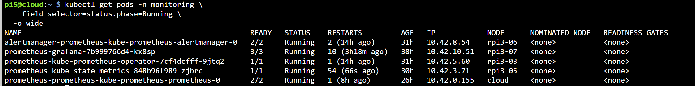
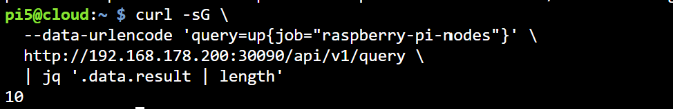
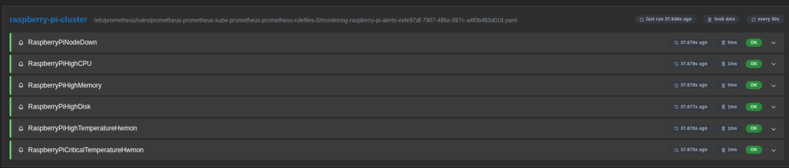

Prometheus Deployment and Configuration
Namespace: monitoring
Helm release: prometheus
Chart: prometheus-community/kube-prometheus-stack
External port: 30090
Related documentation: Monitoring overview · Grafana
1. Phase 1: Host Node Exporters and local Prometheus
The monitoring system was first validated directly on Pi5 before Prometheus was migrated into K3s. Node Exporter ran as a Linux service on every Raspberry Pi, while Prometheus and Alertmanager ran locally on Pi5.
1.1 Install Node Exporter on the Raspberry Pi hosts
Node Exporter was installed on the Pi3 workers using Ansible. The complete inventory and playbook are documented in Monitoring overview. On an individual Debian-based Raspberry Pi, the equivalent package installation is:
sudo apt update
sudo apt install -y prometheus-node-exporter
sudo systemctl enable --now prometheus-node-exporter
Verify the correct systemd service:
Expected output:
The Debian service is named prometheus-node-exporter. Therefore, systemctl status node_exporter may return Unit node_exporter.service could not be found even when the exporter is installed correctly.
Confirm that it listens on port 9100 and exposes metrics:
1.2 Verify all host exporters from Pi5
Run this read-only check from Pi5:
for ip in 192.168.178.200 192.168.50.144 192.168.50.{101..108}; do
if curl -sf --connect-timeout 3 "http://$ip:9100/metrics" >/dev/null; then
echo "$ip:9100 UP"
else
echo "$ip:9100 DOWN"
fi
done
Expected: ten UP entries for Pi5, Pi4, and the eight Pi3 workers.
1.3 Install Prometheus and Alertmanager locally on Pi5
Install the Debian packages:
Confirm the installed tools:
Back up the default Prometheus configuration before changing it:
1.4 Configure local Prometheus scraping
Edit /etc/prometheus/prometheus.yml so that it contains the following global settings, alert configuration, rule-file location, and Raspberry Pi targets:
global:
scrape_interval: 15s
evaluation_interval: 15s
alerting:
alertmanagers:
- static_configs:
- targets:
- 127.0.0.1:9093
rule_files:
- /etc/prometheus/rules/*.yml
scrape_configs:
- job_name: prometheus
static_configs:
- targets:
- 127.0.0.1:9090
- job_name: raspberry-pi-nodes
scrape_interval: 15s
scrape_timeout: 10s
static_configs:
- targets:
- 192.168.178.200:9100
- 192.168.50.144:9100
- 192.168.50.101:9100
- 192.168.50.102:9100
- 192.168.50.103:9100
- 192.168.50.104:9100
- 192.168.50.105:9100
- 192.168.50.106:9100
- 192.168.50.107:9100
- 192.168.50.108:9100
Create the local rule directory:
Validate the configuration before starting Prometheus:
Expected result:
1.5 Configure local alert rules
Create /etc/prometheus/rules/raspberry-pi-alerts.yml:
groups:
- name: raspberry-pi-cluster
rules:
- alert: RaspberryPiNodeDown
expr: up{job="raspberry-pi-nodes"} == 0
for: 1m
labels:
severity: critical
annotations:
summary: Raspberry Pi node is down
description: "{{ $labels.instance }} has been unreachable for one minute."
- alert: RaspberryPiHighCPU
expr: |
100 - (
avg by(instance) (
rate(node_cpu_seconds_total{
job="raspberry-pi-nodes",
mode="idle"
}[5m])
) * 100
) > 85
for: 3m
labels:
severity: warning
annotations:
summary: High CPU usage
description: "{{ $labels.instance }} CPU usage is above 85%."
- alert: RaspberryPiHighMemory
expr: |
100 * (
1 - (
node_memory_MemAvailable_bytes{job="raspberry-pi-nodes"}
/
node_memory_MemTotal_bytes{job="raspberry-pi-nodes"}
)
) > 85
for: 3m
labels:
severity: warning
annotations:
summary: High memory usage
description: "{{ $labels.instance }} memory usage is above 85%."
Set ownership and validate the rule file:
sudo chown prometheus:prometheus \
/etc/prometheus/rules/raspberry-pi-alerts.yml
sudo promtool check rules \
/etc/prometheus/rules/raspberry-pi-alerts.yml
Expected result:
The Kubernetes section later in this guide extends the rules with disk and temperature alerts.
1.6 Start the local monitoring services
Enable and start Alertmanager and Prometheus:
Verify both services:
Expected:
Check their readiness endpoints:
Prometheus should return:
1.7 Verify local targets and run PromQL queries
Open Prometheus locally on Pi5:
For access from another computer without exposing Prometheus publicly, create an SSH tunnel:
Then open http://127.0.0.1:9090 on that computer.
Open the Targets page and confirm that all Raspberry Pi targets are UP:
Run the node-availability query in the Prometheus Query page:
Run a concise query through the local HTTP API:
curl -sG \
--data-urlencode 'query=count(up{job="raspberry-pi-nodes"} == 1)' \
http://127.0.0.1:9090/api/v1/query \
| jq -r '"Online Raspberry Pi targets: \(.data.result[0].value[1])"'
Expected:
Additional PromQL queries for CPU, memory, disk, network, and temperature are provided in Section 7.
1.8 Verify local alert rules and a controlled firing alert
Check that Prometheus loaded the Raspberry Pi rules:
Open the local rules and alerts pages:
To prove the alert pipeline without disconnecting a Raspberry Pi, use a temporary test rule only during initial setup. Create /etc/prometheus/rules/documentation-test.yml:
groups:
- name: documentation-test
rules:
- alert: PrometheusDocumentationTest
expr: vector(1)
for: 30s
labels:
severity: warning
annotations:
summary: Controlled Prometheus alert test
Validate the rule and restart local Prometheus during the initial setup window:
sudo promtool check rules \
/etc/prometheus/rules/documentation-test.yml
sudo systemctl restart prometheus
After approximately 30 seconds, confirm the alert state:
curl -s http://127.0.0.1:9090/api/v1/alerts \
| jq -r '.data.alerts[] | "\(.labels.alertname) = \(.state)"'
Expected:
After collecting the initial evidence, remove the temporary rule and restart Prometheus:
Do not run this temporary local test against the current K3s deployment. Kubernetes alert verification is documented in Section 8.
1.9 Why Prometheus was migrated to K3s
The local Prometheus installation proved that the exporters, queries, and alerts worked. However, a Kubernetes backend cannot use 127.0.0.1:9090 to reach Prometheus on Pi5 because loopback inside a pod refers to that pod. Deploying Prometheus inside K3s provides stable Kubernetes service discovery and integrates it with Grafana, Alertmanager, and the FastAPI backend.
The final K3s architecture uses:
| Purpose | Address or port |
|---|---|
| Host Node Exporters | <node-ip>:9100 |
| Prometheus Kubernetes service | port 9090 |
| Prometheus external access | NodePort 30090 |
| Grafana external access | NodePort 30300 |
1.10 Prevent the Node Exporter port conflict
kube-prometheus-stack normally deploys a Node Exporter DaemonSet. Because the systemd exporters already use host port 9100, the Kubernetes exporter pods previously failed with:
The final design retains the working host exporters and disables the chart component:
Do not change the working exporters to another port. The K3s Prometheus deployment scrapes their existing port 9100.
Before the first K3s deployment, confirm that NodePorts 30090 and 30300 are not assigned to another service:
kubectl get svc -A \
-o custom-columns='NAMESPACE:.metadata.namespace,NAME:.metadata.name,NODEPORTS:.spec.ports[*].nodePort' \
| grep -E '30090|30300' || true
2. K3s and tooling prerequisites
Run the following commands from Pi5. Confirm that the K3s cluster is reachable and that Helm and kubectl are installed:
The Pi5 control plane and required Pi3 workers should report Ready. Pi4 does not need to appear as a Kubernetes node because it is monitored through its host Node Exporter endpoint.
Confirm that the Raspberry Pi Node Exporters respond before installing Prometheus:
for ip in 192.168.178.200 192.168.50.144 192.168.50.{101..108}; do
if curl -sf --connect-timeout 3 "http://$ip:9100/metrics" >/dev/null; then
echo "$ip:9100 UP"
else
echo "$ip:9100 DOWN"
fi
done
All ten addresses must report UP before Prometheus is configured to scrape them. This command performs read-only HTTP requests and does not modify the exporters.
3. Add the Helm repository
helm repo add prometheus-community \
https://prometheus-community.github.io/helm-charts
helm repo update
Verify that the chart is available:
4. Helm values
Create prometheus-k3s-values.yaml in the working directory:
nodeExporter:
enabled: false
prometheus:
service:
type: NodePort
port: 9090
targetPort: 9090
nodePort: 30090
prometheusSpec:
retention: 7d
resources:
requests:
memory: 300Mi
cpu: 100m
limits:
memory: 1Gi
cpu: 1000m
additionalScrapeConfigs:
- job_name: raspberry-pi-nodes
scrape_interval: 15s
scrape_timeout: 10s
static_configs:
- targets:
- 192.168.178.200:9100
- 192.168.50.144:9100
- 192.168.50.101:9100
- 192.168.50.102:9100
- 192.168.50.103:9100
- 192.168.50.104:9100
- 192.168.50.105:9100
- 192.168.50.106:9100
- 192.168.50.107:9100
- 192.168.50.108:9100
grafana:
enabled: true
replicas: 1
service:
type: NodePort
port: 80
targetPort: 3000
nodePort: 30300
alertmanager:
enabled: true
kube-state-metrics:
enabled: true
nodeExporter.enabled is set to false because Node Exporter already runs directly on each Raspberry Pi host.
The configuration also:
- exposes Prometheus through NodePort
30090; - exposes Grafana through NodePort
30300; - retains Prometheus metrics for seven days;
- scrapes Pi5, Pi4, and eight Pi3 exporters every 15 seconds;
- enables Alertmanager and kube-state-metrics.
5. Validate and install
Validate the generated Kubernetes resources without modifying the cluster:
helm template prometheus \
prometheus-community/kube-prometheus-stack \
-n monitoring \
-f prometheus-k3s-values.yaml >/dev/null \
&& echo "Helm configuration validation: PASS"
Expected output:
Install or update the monitoring stack:
helm upgrade --install prometheus \
prometheus-community/kube-prometheus-stack \
--namespace monitoring \
--create-namespace \
-f prometheus-k3s-values.yaml \
--set nodeExporter.enabled=false \
--wait \
--timeout 30m
helm upgrade --install installs the release when it does not exist and updates the same release when it already exists.
6. Verify the deployment
Verify the Helm release:
Display only running monitoring pods for a clean terminal result:
Verify the services and their ports:
kubectl get svc -n monitoring \
-o custom-columns='NAME:.metadata.name,TYPE:.spec.type,PORTS:.spec.ports[*].port,NODEPORTS:.spec.ports[*].nodePort'
Confirm that no Kubernetes Node Exporter DaemonSet was created:
Expected states:
| Component | Expected state |
|---|---|
| Prometheus | 2/2 Running |
| Alertmanager | 2/2 Running |
| Prometheus Operator | 1/1 Running |
| kube-state-metrics | 1/1 Running |
| Grafana | 3/3 Running |
| Kubernetes Node Exporter | No DaemonSet; host exporters are used. |
Test readiness:
Expected:
Produce a short readiness result suitable for documentation:
Access pages:
| Page | URL |
|---|---|
| Prometheus | http://192.168.178.200:30090 |
| Targets | http://192.168.178.200:30090/targets |
| Rules | http://192.168.178.200:30090/rules |
| Alerts | http://192.168.178.200:30090/alerts |


The targets screenshot must show all ten raspberry-pi-nodes endpoints in the UP state. Zoom out or capture a second view if all rows do not fit in one screenshot.
7. PromQL queries
Node availability
CPU usage
100 - (
avg by(instance) (
rate(node_cpu_seconds_total{
job="raspberry-pi-nodes",
mode="idle"
}[2m])
) * 100
)
Memory usage
100 * (
1 - (
node_memory_MemAvailable_bytes{job="raspberry-pi-nodes"}
/
node_memory_MemTotal_bytes{job="raspberry-pi-nodes"}
)
)
Disk usage
100 * (
1 - (
node_filesystem_avail_bytes{
job="raspberry-pi-nodes",
mountpoint="/",
fstype!~"tmpfs|overlay|squashfs"
}
/
node_filesystem_size_bytes{
job="raspberry-pi-nodes",
mountpoint="/",
fstype!~"tmpfs|overlay|squashfs"
}
)
)
Temperature
Alternative metric:
Network receive
sum by(instance) (
rate(node_network_receive_bytes_total{
job="raspberry-pi-nodes",
device!~"lo|veth.*|docker.*|cni.*|flannel.*"
}[2m])
)
Network transmit
sum by(instance) (
rate(node_network_transmit_bytes_total{
job="raspberry-pi-nodes",
device!~"lo|veth.*|docker.*|cni.*|flannel.*"
}[2m])
)
8. Alert rules
Store the following resource at k8s/monitoring/raspberry-pi-alerts.yaml:
apiVersion: monitoring.coreos.com/v1
kind: PrometheusRule
metadata:
name: raspberry-pi-alerts
namespace: monitoring
labels:
release: prometheus
spec:
groups:
- name: raspberry-pi-cluster
rules:
- alert: RaspberryPiNodeDown
expr: up{job="raspberry-pi-nodes"} == 0
for: 1m
labels:
severity: critical
annotations:
summary: Raspberry Pi node is down
description: >-
{{ $labels.instance }} has been unreachable for more than one minute.
- alert: RaspberryPiHighCPU
expr: |
100 - (
avg by(instance) (
rate(node_cpu_seconds_total{
job="raspberry-pi-nodes",
mode="idle"
}[5m])
) * 100
) > 85
for: 3m
labels:
severity: warning
annotations:
summary: High CPU usage
description: >-
{{ $labels.instance }} CPU usage has exceeded 85%.
- alert: RaspberryPiHighMemory
expr: |
100 * (
1 - (
node_memory_MemAvailable_bytes{job="raspberry-pi-nodes"}
/
node_memory_MemTotal_bytes{job="raspberry-pi-nodes"}
)
) > 85
for: 3m
labels:
severity: warning
annotations:
summary: High memory usage
description: >-
{{ $labels.instance }} memory usage has exceeded 85%.
- alert: RaspberryPiHighDisk
expr: |
100 * (
1 - (
node_filesystem_avail_bytes{
job="raspberry-pi-nodes",
mountpoint="/",
fstype!~"tmpfs|overlay|squashfs"
}
/
node_filesystem_size_bytes{
job="raspberry-pi-nodes",
mountpoint="/",
fstype!~"tmpfs|overlay|squashfs"
}
)
) > 80
for: 5m
labels:
severity: warning
annotations:
summary: High disk usage
description: >-
{{ $labels.instance }} root disk usage has exceeded 80%.
- alert: RaspberryPiHighTemperature
expr: |
max by(instance) (
node_hwmon_temp_celsius{job="raspberry-pi-nodes"}
) > 60
for: 2m
labels:
severity: warning
annotations:
summary: High Raspberry Pi temperature
description: >-
{{ $labels.instance }} temperature is above 60°C.
- alert: RaspberryPiCriticalTemperature
expr: |
max by(instance) (
node_hwmon_temp_celsius{job="raspberry-pi-nodes"}
) > 70
for: 1m
labels:
severity: critical
annotations:
summary: Critical Raspberry Pi temperature
description: >-
{{ $labels.instance }} temperature is above 70°C.
If the nodes expose node_thermal_zone_temp instead, use that metric in the two temperature rules.
Apply and verify:
kubectl apply --dry-run=server \
-f k8s/monitoring/raspberry-pi-alerts.yaml
kubectl apply \
-f k8s/monitoring/raspberry-pi-alerts.yaml
kubectl get prometheusrule -n monitoring
kubectl describe prometheusrule raspberry-pi-alerts \
-n monitoring
Produce a concise Kubernetes result:
kubectl get prometheusrule raspberry-pi-alerts \
-n monitoring \
-o custom-columns='NAME:.metadata.name,NAMESPACE:.metadata.namespace,GROUPS:.spec.groups[*].name'
Verify through the Prometheus API:

The screenshot is valid evidence that the raspberry-pi-cluster rule group loaded successfully and that all displayed rules were evaluated with status OK. The temperature-rule names include the Hwmon suffix in the running configuration; this naming difference does not change their purpose.
Screenshots of a firing node-down alert or Alertmanager notification are optional. Do not stop a working node solely to create documentation evidence. The loaded-rules screenshot is sufficient to demonstrate the alert-rule configuration.
9. Backend service discovery
Kubernetes workloads access Prometheus through its internal service:
kubectl set env deployment/backend \
-n edge-monitoring \
PROMETHEUS_URL=http://prometheus-kube-prometheus-prometheus.monitoring.svc.cluster.local:9090
Wait for the backend rollout and confirm its configured URL:
kubectl rollout status deployment/backend \
-n edge-monitoring \
--timeout=5m
kubectl exec -n edge-monitoring deployment/backend -- \
printenv PROMETHEUS_URL
Expected URL:
Verify Prometheus readiness from inside the backend pod:
kubectl exec -n edge-monitoring deployment/backend -- \
python -c "import urllib.request; print(urllib.request.urlopen('http://prometheus-kube-prometheus-prometheus.monitoring.svc.cluster.local:9090/-/ready').read().decode())"
Expected output:
10. Deployment evidence
The document uses three screenshots as final deployment evidence:
| Evidence | Repository path |
|---|---|
| Monitoring components running in K3s | images/prometheus-pods-healthy.png |
Raspberry Pi scrape targets reporting UP |
images/prometheus-targets.png |
Raspberry Pi alert rules loaded with status OK |
images/raspberry-pi-alerts-rules.png |
The local installation is documented through commands and expected outputs, so additional local Prometheus screenshots are not required.
11. Result
The monitoring pipeline was first proven locally on Pi5 by installing Prometheus and Alertmanager, scraping all ten host Node Exporters, executing PromQL queries, and validating a controlled firing alert. Prometheus was then migrated to kube-prometheus-stack in the K3s monitoring namespace. The final deployment stores seven days of metrics, evaluates the Raspberry Pi alert rules, supplies Grafana dashboards, and provides monitoring data to the FastAPI backend through Kubernetes service discovery.